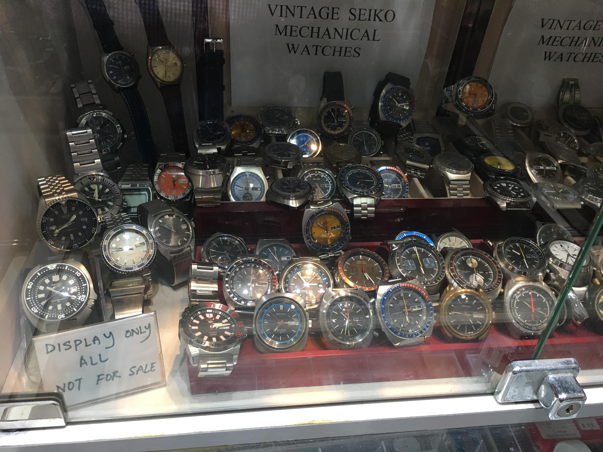

Why Collect Watches
To me, a timepiece represents something truly profound. It is not only a device whose measurements our lives revolve around, but also an extension of ourselves. I am a firm believer that a watch can tell us a lot about its wearer. From large and diamond clad pieces, to ultra thin and understated, these objects offer a unique window into the character of a person we have never met, and may never meet.
Work of Art
Furthermore, a watch is a work of art. A highly skilled artist must bring to life these raw materials, put them together in such a fashion that they begin to work together, acting as organs by which the parts function to keep it alive and running. Of these parts the escapement, or heart, is at the center of it all. A simple wind of the crown gives the escapement the power to start “beating,” which in turn brings life to the rest of the movement. History is associated with Vintage Watches. As fascinating as these movements can be, there is still one more thought that may be the most profound, and important, for collectors when it comes to the watches they choose. Simply put, it is the story behind each watch. For example, to wear an antique Longines chronograph, is to wear a timepiece that could very well have been entrenched in battle, on the wrist of a soldier during a great world war. A vintage Rolex Explorer to have been the watch worn to the summit of Mt. Everest; or even the famous Omega Speedmaster to have been the only watch to leave the confines of our known world, to travel where no man has gone before. This, for me, is the most important part of collecting. I love to imagine who may have worn the very watch on my wrist before me, where in the world it traveled to, and I love that no matter how old it may be, it never stops ticking. We, today, may not have been present at history’s most important moments, or personally involved in a great exploration, but to be one step closer to something bygone and to have a piece of history of your wrist is what it’s all about. This is what makes collectors tick.
Watch Collector

My name is Ushan Hassan and my guilty pleasure would be collecting watches, I like to collect vintage or popular watches. My favourite watch brand is Rolex as I find their build quality and crafsmanship better than others. I believe that watches can be a good Investment if the right one is caught.